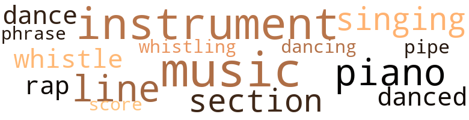
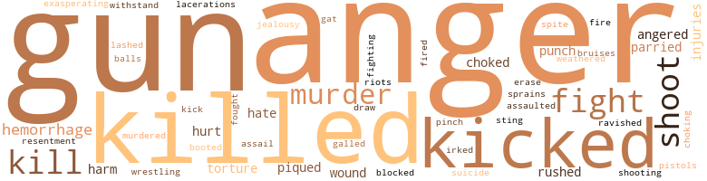
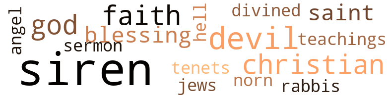

Interne (The), by Thurman, Wallace and Abraham L. Furman (1932)
40 music-related terms matched in this text.
Most frequent terms in this topic: music (7); instrument (4); piano (4); line (4); singing (3)
dance.n.01
Definition: an artistic form of nonverbal communication
| word | sentence |
|---|---|
| dance | " Come on , " he said , " this is my dance . " |
dance.v.03
Definition: skip, leap, or move up and down or sideways
| word | sentence |
|---|---|
| danced | About thirty young couples danced around the recreation room , gathered about the punch bowl and buffet in the dining-room , or else migrated to dark , secluded corners on the spacious veranda . |
| danced | Carl remembered he had not yet danced with Nora . |
| dance | " This is the stag line , Nora , me darling , " Pete said , then , striking the pose of a Chautauqua elocutionist , recited : " Please , pretty lady Come and dance with me . " |
| dancing | Even Ray fell for her line when they were dancing together . |
music.n.01
Definition: an artistic form of auditory communication incorporating instrumental or vocal tones in a structured and continuous manner
| word | sentence |
|---|---|
| music | Carl stared after them , listened absent-mindedly to the music for a moment , then pulled a flask from his hip pocket , and poured a long stream of liquor down his throat . |
| music | The music from the main scene of the party was romantically distant . |
| music | The delighted audience stamped their feet , clapped their hands and shouted encouragement and approbation in time with the music . |
| music | And from the recreation room came sounds of joy , dancing , and mocking jazz music . |
| music | It might have been jazz music or classical music . |
| music | It might have been jazz music or classical music . |
| music | Then . . . well . . . whoever gets caught for a second offense will have to leave the hospital at once and face the music . |
musical_instrument.n.01
Definition: any of various devices or contrivances that can be used to produce musical tones or sounds
| word | sentence |
|---|---|
| instruments | He heard the clatter of instruments as they hit the pavement . |
| instrument | " And still there 's a hospital , " Carl frowned as he picked up the offending instrument . |
| instrument | lie found the instrument and hastened from the room . |
| instruments | He forgot to sterilize his instruments properly . " |
| instrument | Gingerly , Carl approached the telephone , took down the receiver and attempted to imitate Jim 's manner at the instrument . |
| instrument | Cal who was the nearest to the instrument reluctantly answered its summons . |
phrase.n.02
Definition: a short musical passage
| word | sentence |
|---|---|
| phrase | Only an occasional phrase filtered through clearly enough to be recognizable . |
piano.n.01
Definition: a keyboard instrument that is played by depressing keys that cause hammers to strike tuned strings and produce sounds
| word | sentence |
|---|---|
| piano | The piano from the nurses ' home was borrowed on each occasion . |
| piano | Several times the internes had petitioned unsuccessfully for a piano of their own . |
| piano | Piqued , the boys had decided to buy a piano of their own , and had even gone so far as to create a piano sinking fund . |
| piano | Piqued , the boys had decided to buy a piano of their own , and had even gone so far as to create a piano sinking fund . |
pipe.n.04
Definition: a tubular wind instrument
| word | sentence |
|---|---|
| pipe | When they had gone , Jack sank into one of the lounging chairs , and filled his pipe . |
rap.n.05
Definition: genre of African-American music of the 1980s and 1990s in which rhyming lyrics are chanted to a musical accompaniment; several forms of rap have emerged
| word | sentence |
|---|---|
| rap | lie would beat the rap . |
| rap | In jail if you ca n't borrow the money to pay the fine and beat this bootlegging rap . |
score.n.02
Definition: a written form of a musical composition; parts for different instruments appear on separate staves on large pages
| word | sentence |
|---|---|
| score | And then when I heard him ... " he nodded toward Pete , feeling that in some way he was evening the score , " say what he did about getting that half dead patient to sign away his own body . . . well ... It sorta got me for a minute . " |
section.n.01
Definition: a self-contained part of a larger composition (written or musical)
| word | sentence |
|---|---|
| section | Behind her was the female section . |
| section | There 's a big fire in the dago section . |
| section | This territoiy embraced the entire mid-town business and theatrical section , the factory and manufacturing centers which clustered about the river , and the more flagrant slum neighborhoods , grim complements to the progress of industry , in which were isolated the poorer Jews , Italians , Negroes , and Shanty Irish . |
singing.n.01
Definition: the act of singing vocal music
| word | sentence |
|---|---|
| singing | Everyone seemed to he laughing or shouting or singing drunkenly . |
| singing | Annabelle went into the house , singing happily . |
| singing | Cal and Jack began to tell him about the equipment he would need to take out on his ambulance call , and were again interrupted by the reentry of Ted , singing lustily . |
tune.n.01
Definition: a succession of notes forming a distinctive sequence
| word | sentence |
|---|---|
| line | Carl was not sympathetic to this line of reasoning . |
| line | Carl hesitated for a moment , looked at the money , at Ted , at Gus , then drawing his lips into a thin , straight , determined line , began signing the individual sheets in his prescription books . |
| line | Carl 's lips tightened into a grim , straight line as Annabelle continued to gush about the good time the hospital staff must have . |
| line | One of the nurses , dress lifted high above the stocking line , showing her firm , naked thighs , was performing an exhibition dance , imitating Ann Pennington . |
whistle.n.01
Definition: the sound made by something moving rapidly or by steam coming out of a small aperture
| word | sentence |
|---|---|
| whistles | Police whistles , fire engines , and official sirens screamed defiant warnings . |
whistle.v.01
Definition: make whistling sounds
| word | sentence |
|---|---|
| whistle | Somewhere in the foggy distance , a coal barge blew a warning whistle , which topped the prevailing sounds , and lingered like a cry of despair in Carl 's ears . |
| whistling | With which he banged down the receiver , and walked gayly away from the telephone , whistling . |
95 violence-related terms matched in this text.
Most frequent terms in this topic: gun (5); shoot (4); fight (4); anger (4); kill (4)
anger.n.01
Definition: a strong emotion; a feeling that is oriented toward some real or supposed grievance
| word | sentence |
|---|---|
| Anger | Anger inflamed his cheeks . |
| anger | He stumbled out of the room , blinded with disgust and anger . |
| anger | His anger dissipated by vigorous walking , Carl once more remembered the scene lie had witnessed that morning . |
| anger | Pete asked before Carl could give voice to the resentment and anger Nora 's statement had aroused within him . |
| anger | And he also began to realize that this being constantly possessed and lashed by a futile , internal anger impeded his own development , warped his judgment , and made him precociously bitter . |
anger.v.02
Definition: become angry
| word | sentence |
|---|---|
| angered | It both amazed and angered Carl to note the reactions of his fellow culprits . |
| angered | Her silly attempts to be sympathetic , her senseless questions , her inane digressions from the subject at hand , had irritated and angered him . |
assail.v.01
Definition: attack someone physically or emotionally
| word | sentence |
|---|---|
| assaulted | Only her timely jump from the automobile had saved her from being brutally assaulted . |
attack.v.01
Definition: launch an attack or assault on; begin hostilities or start warfare with
| word | sentence |
|---|---|
| assail | Would they not point to him as a horrible example of a young man too weak to fight the temptations which must inevitably assail anyone in his position ? |
bleeding.n.01
Definition: the flow of blood from a ruptured blood vessel
| word | sentence |
|---|---|
| hemorrhage | He had just returned from attending the patient whose hemorrhage had drawn him away from the bridge game . |
| hemorrhages | " I 've stopjjed so many of his hemorrhages I was beginning to grow fond of him . " |
| hemorrhage | Your pet patient is having another hemorrhage . |
boot.v.01
Definition: kick; give a boot to
| word | sentence |
|---|---|
| booted | It sickened him , this being called to pick up starving men , booted out of a long and depressing breadline when they had fallen unconscious , unable longer to await the moment when they would he handed a murky cup of coffee and a stale bun . |
bruise.n.01
Definition: an injury that doesn't break the skin but results in some discoloration
| word | sentence |
|---|---|
| bruises | She 's only had a few superficial bruises , and a slight shock . " |
defy.v.01
Definition: resist or confront with resistance
| word | sentence |
|---|---|
| withstand | The floorboards were splintered and uneven , made of soft wood unable to withstand years of vigorous scrubbing and heavy traffic . |
draw.v.23
Definition: pull (a person) apart with four horses tied to his extremities, so as to execute him
| word | sentence |
|---|---|
| draw | " Have him draw up some legal papers to protect that money you 're going to lend me . " |
erase.v.01
Definition: remove from memory or existence
| word | sentence |
|---|---|
| erase | The scene which was so seared upon his memory that he was certain he would never be able to erase it . |
fight.n.05
Definition: a boxing or wrestling match
| word | sentence |
|---|---|
| fight | Were you going to a clinic which catered to people who really ca n't and should n't be made to raise large families , then I 'd give you my blessings , and fight for your right to flout the law . |
fight.v.02
Definition: fight against or resist strongly
| word | sentence |
|---|---|
| fighting | He knows none of us stand a chance fighting him . |
| fight | Would they not point to him as a horrible example of a young man too weak to fight the temptations which must inevitably assail anyone in his position ? |
| fought | Workers , who had submitted to drastic wage cuts , revolted against further reductions , an increase in their working hours , and the loss of privileges which they had fought for and won after their needless sacrifices on the battlefields of France . |
| fight | I 've got to fight my own battles in my own way . " |
| fight | Every living person had to fight and scuffie to exist . |
gag.v.06
Definition: cause to retch or choke
| word | sentence |
|---|---|
| choked | There were firemen overcome or painfully choked by the prevailing smoke clouds . |
| choking | And there I stood , with greasy lingers and a choking mouthful of the dead man 's squab . " |
| choked | Carl had stared at them blankly , choked with surprise and chagrin , and unable to comprehend the sense of what they had said . |
gall.v.02
Definition: irritate or vex
| word | sentence |
|---|---|
| galled | He remained in a perpetual state of indignation , heightened by the knowledge that he , Carl Armstrong , could do nothing about the things which galled him . |
| irked | Bob was irked because Pete had ignored his heart bid in favor of clubs . |
gat.n.01
Definition: a gangster's pistol
| word | sentence |
|---|---|
| gat | Find a gat , Tom ? " |
gun.n.01
Definition: a weapon that discharges a missile at high velocity (especially from a metal tube or barrel)
| word | sentence |
|---|---|
| gun | He had no gorilla mob , no grisly gunmen , no armed bodyguard . |
| gun | He had found no gun . |
| gun | With nothing else to do , and tired of speculating on what might happen , Jim , Pete , Ray and Bob had gathered around the pool table and begun shooting dice . |
| gun | Carl had had presence of mind enough to shut the door behind him , wrest the gun away from the hysterical woman , and attempt to quiet them both before the policeman 's return . |
| gun | In his anxiety , he forgot this could be proven as easily as his finger had pressed the trigger ; forgot that his gun was of a different caliber than the others , a special make Weston with marked cartridges . |
hate.n.01
Definition: the emotion of intense dislike; a feeling of dislike so strong that it demands action
| word | sentence |
|---|---|
| hate | And 1 hate to see young fellows like Armstrong turned into rotters or calloused machines . |
hate.v.01
Definition: dislike intensely; feel antipathy or aversion towards
| word | sentence |
|---|---|
| hate | I just hate to see a decent kid get into a mess . " |
infuriate.v.01
Definition: make furious
| word | sentence |
|---|---|
| exasperating | Nora was being deliberately exasperating . |
injury.n.01
Definition: any physical damage to the body caused by violence or accident or fracture etc.
| word | sentence |
|---|---|
| injuries | Minor injuries were attended to immediately and the patient allowed to return to his home , or if further examination and treatment were thought necessary , he was held overnight . |
| injuries | " But , " Carl persisted , " there might be some internal injuries . " |
| harm | I meant no harm . |
| harm | And the wooden massage did her no harm . |
jealousy.n.01
Definition: a feeling of jealous envy (especially of a rival)
| word | sentence |
|---|---|
| jealousy | And it testified to the esteem in which they held her when none of them took offense or tried in anyway to exhibit petty jealousy . |
kick_back.v.02
Definition: spring back, as from a forceful thrust
| word | sentence |
|---|---|
| kicked | " You 'll get us both kicked out . " |
| kick | " If I did n't , I 'd kick you for being so dumb and skittish . |
| kicked | He kicked the sleeping boy on the shins . |
| kicked | And the more ambitious you are , the harder you 'll get kicked . " |
| kicked | " Why ... he could have kicked me out for that morgue date tonight . |
kill.v.10
Definition: cause the death of, without intention
| word | sentence |
|---|---|
| killed | He had had to administer to those who were not immediately killed . |
| kill | " Do n't let her kill me , doc , do n't let her kill „ ? > |
| kill | " Do n't let her kill me , doc , do n't let her kill „ ? > |
| kill | The woman shaken by emotional insanity and crying : " I 've got to kill him . |
| kill | He wo n't kill himself . |
| killed | He had killed a guard . |
| killed | How could they prove that his had been the fatal bullet wrhen so many others in the melee might have killed the guard ? |
| killed | But one guard was killed , and several of the prisoners were well riddled with police bullets . |
laceration.n.01
Definition: a torn ragged wound
| word | sentence |
|---|---|
| lacerations | There were many with minor burns and flesh lacerations who were in need of first aid treatment . |
malice.n.01
Definition: feeling a need to see others suffer
| word | sentence |
|---|---|
| spite | Despite the heroic efforts of the doctors and nurses , the machinery broke down under the strain , precipitated confusion , fatalities . |
murder.n.01
Definition: unlawful premeditated killing of a human being by a human being
| word | sentence |
|---|---|
| murder | My patient can not be disturbed tonight . . . even if she 's wanted for murder . |
| murder | It 's murder , man , even if the woman does n't die . |
| murder | " I guess I do love you , after all . . . and you see . . . hang it all , a man ca n't murder his own child . " |
murder.v.01
Definition: kill intentionally and with premeditation
| word | sentence |
|---|---|
| murdered | She had to get him to admit that he was cornered , that he was an enemy of society who had committed an unpardonable crime , planned a prison insurrection , murdered a police officer , and that there was now no way to inspire leniency . |
musket_ball.n.01
Definition: a solid projectile that is shot by a musket
| word | sentence |
|---|---|
| balls | Disconsolately he spread his hand , got up from the table , and crossed the room to watch the antics of the pool balls . |
open_fire.v.01
Definition: start firing a weapon
| word | sentence |
|---|---|
| fired | If you do the doctor who brought you in here , and me too , will surely he fired . " |
| fire | " If I were you I 'd fire the lot of us . " |
pain.v.02
Definition: cause emotional anguish or make miserable
| word | sentence |
|---|---|
| hurt | It could n't hurt much . |
| hurt | " A little studying would n't hurt you , Ray . " |
parry.v.01
Definition: impede the movement of (an opponent or a ball)
| word | sentence |
|---|---|
| blocked | Windows had been blocked off from the light and sunshine in wholesale lots . |
| parried | Carl parried . |
| parried | " Does it matter , " she parried , " whether I am or not ? |
pinch.n.02
Definition: an injury resulting from getting some body part squeezed
| word | sentence |
|---|---|
| pinch | " Our plan was pinch proof . |
pique.v.01
Definition: cause to feel resentment or indignation
| word | sentence |
|---|---|
| piqued | Gingerly , Carl complied and was piqued at the seeming roughness with which the driver dropped the girl down . |
| piqued | Annabelle felt particularly piqued because she herself had gone the limit with Carl . |
pistol.n.01
Definition: a firearm that is held and fired with one hand
| word | sentence |
|---|---|
| pistols | Then there would be , of course , the more desperate humans who would woo death with pistols , the more vitriolic poisons , and crippling dives from high places to the unyielding pavement beneath . |
punch.n.01
Definition: (boxing) a blow with the fist
| word | sentence |
|---|---|
| punch | " Say , " Jack asked , " who spiked that punch anyway ? " |
| punch | " You or the punch ? " |
rape.v.01
Definition: force (someone) to have sex against their will
| word | sentence |
|---|---|
| ravished | Also the night would bring hysterical drunkards who feared they had been poisoned , or whose optic nerves had reacted alarmingly to bootleg li < | iior , And Mine would be iiiNime , sodden dcrc - HoK ravished by delirium lmucus . |
resentment.n.01
Definition: a feeling of deep and bitter anger and ill-will
| word | sentence |
|---|---|
| resentment | Pete asked before Carl could give voice to the resentment and anger Nora 's statement had aroused within him . |
riot.n.01
Definition: a public act of violence by an unruly mob
| word | sentence |
|---|---|
| riots | Winter , the depression , hordes of unemployed , ruthless business retrenchment which precipitated industrial chaos and hunger riots . |
rush.v.02
Definition: attack suddenly
| word | sentence |
|---|---|
| rushed | He had had to place them on stretchers and allocate them to ambulance space so they could be rushed to the hospital . |
| rushed | We 're so rushed that no patient gets the individual care he should get . |
shoot.v.02
Definition: kill by firing a missile
| word | sentence |
|---|---|
| shoot | If you wo n't let me shoot him , do n't operate . |
| shoot | Awaiting her chance , she had smuggled the revolver into the hospital , and plead with her doomed husband to shoot himself . |
| shoot | Why should he shoot himself ? |
| shoot | " Can you shoot crap , fellow ? " |
shooting.n.02
Definition: killing someone by gunfire
| word | sentence |
|---|---|
| shooting | With nothing else to do , and tired of speculating on what might happen , Jim , Pete , Ray and Bob had gathered around the pool table and begun shooting dice . |
sprain.n.01
Definition: a painful injury to a joint caused by a sudden wrenching of its ligaments
| word | sentence |
|---|---|
| Sprains | Sprains , bruises , lacerations , childbirth , social diseases , contagious germ infections , even major operations , calling for delicate surgical skill , had become too commonplace for him to be emotional about . |
sting.n.03
Definition: a painful wound caused by the thrust of an insect's stinger into skin
| word | sentence |
|---|---|
| sting | He knew the other internes were intent on having sport , but he felt that if he joined in , he might be able to take some of the sting from their hazing . |
suicide.n.01
Definition: the act of killing yourself
| word | sentence |
|---|---|
| suicide | He would not commit suicide . |
torment.v.01
Definition: torment emotionally or mentally
| word | sentence |
|---|---|
| torture | It was torture . |
| torture | Carl spoke quickly , then stammered out the rest of his words , anxious to give Jim no further chance to torture him . |
weather.v.01
Definition: face and withstand with courage
| word | sentence |
|---|---|
| weathered | That I weathered them and remained put may not be to my credit , but I like to feel that I have stayed where I could do the most good . |
whip.v.04
Definition: strike as if by whipping
| word | sentence |
|---|---|
| lashed | And he also began to realize that this being constantly possessed and lashed by a futile , internal anger impeded his own development , warped his judgment , and made him precociously bitter . |
wound.n.01
Definition: an injury to living tissue (especially an injury involving a cut or break in the skin)
| word | sentence |
|---|---|
| wound | A patient , angry at a nurse , had jerked himself into an upright position and opened a troublesome wound which would have to he stitched again . |
| wounds | The farce of trying to save him from dying from his bullet wounds so that the state could exact its revenge had impressed itself upon the ■ woman 's overwrought mind , become a major obsession which drove her to desperation , and metamorphosed her from a meek , subservient , compliant wife , to a vengeful woman of action . |
wrestle.v.01
Definition: combat to overcome an opposing tendency or force
| word | sentence |
|---|---|
| wrestling | I do n't enjoy wrestling with these tough birds when they 're coming out of ether . |
37 religion-related terms matched in this text.
Most frequent terms in this topic: siren (10); devil (4); faith (3); Christian (3); god (2)
blessing.n.05
Definition: the act of praying for divine protection
| word | sentence |
|---|---|
| blessing | " What a blessing that would he . " |
| blessings | Were you going to a clinic which catered to people who really ca n't and should n't be made to raise large families , then I 'd give you my blessings , and fight for your right to flout the law . |
christian.n.01
Definition: a religious person who believes Jesus is the Christ and who is a member of a Christian denomination
| word | sentence |
|---|---|
| Christian | " That 's Christian of you , " she said lightly , " and a new experience in my life . " |
| Christian | It was Pete Christian who spoke , and he smiled mischievously as his partner , Bob , berated him . |
| Christian | . . . Doctor Christian ? |
divine.v.01
Definition: perceive intuitively or through some inexplicable perceptive powers
| word | sentence |
|---|---|
| divined | When he had gone , Nora contemplated the bemused Carl for a moment , divined the course of his thoughts , then said : " Gee , but the gods are good to you . " |
dogma.n.01
Definition: a religious doctrine that is proclaimed as true without proof
| word | sentence |
|---|---|
| tenets | His mother had invested him with her emotional tenets . |
god.n.03
Definition: a man of such superior qualities that he seems like a deity to other people
| word | sentence |
|---|---|
| gods | When he had gone , Nora contemplated the bemused Carl for a moment , divined the course of his thoughts , then said : " Gee , but the gods are good to you . " |
| god | You 'll rush to accidents and wade in gore knee deep , then bring your lousy patients back to this goddamn , filthy hospital that ought to be condemned . |
| god | lie was a god to the internes who worked under him . |
hell.n.01
Definition: any place of pain and turmoil
| word | sentence |
|---|---|
| hell | Understaffed , hampered by lack of equipment or intelligent organization , they cloaked their human sympathies in an exterior armor , crass and metallic , doing all they could do , and saying to hell with that which remained undone . |
jew.n.01
Definition: a person belonging to the worldwide group claiming descent from Jacob (or converted to it) and connected by cultural or religious ties
| word | sentence |
|---|---|
| Jews | This territoiy embraced the entire mid-town business and theatrical section , the factory and manufacturing centers which clustered about the river , and the more flagrant slum neighborhoods , grim complements to the progress of industry , in which were isolated the poorer Jews , Italians , Negroes , and Shanty Irish . |
norn.n.01
Definition: (Norse mythology) any of the three goddesses of destiny; identified with Anglo-Saxon Wyrd; similar to Greek Moirae and Roman Parcae
| word | sentence |
|---|---|
| Norn | Put whatever it was Jack was supposed to listen to remained unsaid , for Pete was interrupted by Norn , who slipped quietly into the room and peered around cautiously to see who was present . |
rabbi.n.01
Definition: spiritual leader of a Jewish congregation; qualified to expound and apply Jewish law
| word | sentence |
|---|---|
| rabbis | He first contacted several Jewish rabbis and gained an entry to the sacramental wine stocks . |
religion.n.01
Definition: a strong belief in a supernatural power or powers that control human destiny
| word | sentence |
|---|---|
| faith | And yet , he clung to life tenaciously , eagerly submitting to medical ministration , and having unlimited faith in the hospital staff 's ability to pull him through . |
| faith | His faith in himself was ridiculously constant . |
| faith | in whom all patients have faith , not necessarily because of his medical prowess , hut rather because of his perfect bed-side manner and impressive appearance . |
saint.n.02
Definition: person of exceptional holiness
| word | sentence |
|---|---|
| saint | Amd Carl no longer considered this mythical country doctor paragon of his mother 's as a saint . |
| angel | " Dad 's waiting , " she cooed , " and I 'm sure he 'll fix everything up for my little angel . |
| saint | He was known as the saint of Flanagan Hall . |
satan.n.01
Definition: (Judeo-Christian and Islamic religions) chief spirit of evil and adversary of God; tempter of mankind; master of Hell
| word | sentence |
|---|---|
| devil | " What in the devil are you driving at ? " |
| devil | " What the devil . . . ? " |
| devil | " How in the devil can you internes pay that ? " |
| devil | " Poor devil , " Carl said . |
sermon.n.02
Definition: a moralistic rebuke
| word | sentence |
|---|---|
| sermon | You 've heard the longest sermon I 've preached since I reached middle age . |
siren.n.01
Definition: a sea nymph (part woman and part bird) supposed to lure sailors to destruction on the rocks where the nymphs lived
| word | sentence |
|---|---|
| siren | Carl heard the wail of the ambulance siren , as Jack rushed him out into the corridor . |
| sirens | Police whistles , fire engines , and official sirens screamed defiant warnings . |
| siren | A siren shrieked . |
| siren | A moment later the siren shrieked its warning , then faded into the distance . |
| siren | In vain ( lid the driver sound his siren . |
| siren | Seeing the ambulance making no headway , and judging from the impatient cries of the siren that immediate aid was necessary , lie had come to their rescue . |
| siren | Signalling for the driver to follow him , he added the screams of his siren to the din , and forced his way through the traffic with the liquorladen ambulance in his wake . |
| siren | . . . " A siren surmounted the cacophonous vocal barrage . |
| siren | The raucous voices and the din of tbc siren threatened to deafen him . |
| siren | The deafening siren . |
| siren | The driver turned his head , and grinned knowingly at Carl , then increased the speed of his motor , and the volume of his siren . |
teaching.n.02
Definition: a doctrine that is taught
| word | sentence |
|---|---|
| teachings | He berated himself mercilessly for having allowed himself to drift so far away from her and from her teachings . |